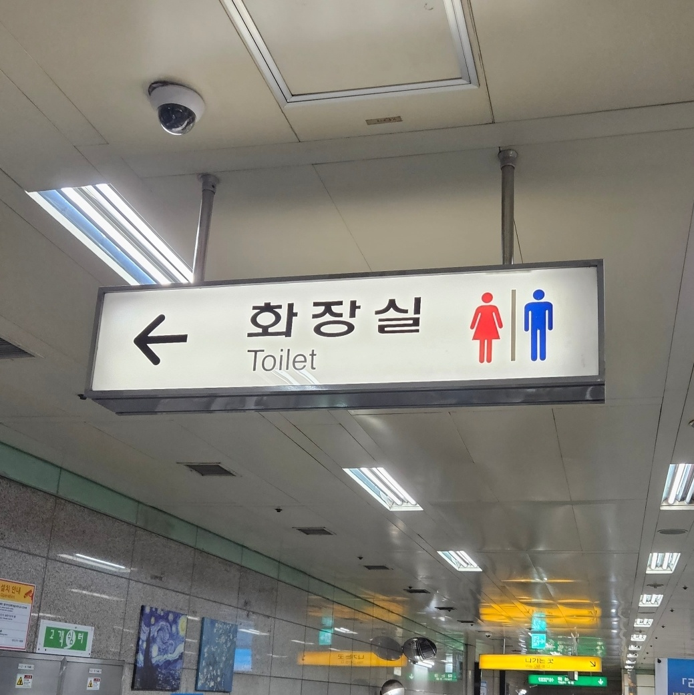
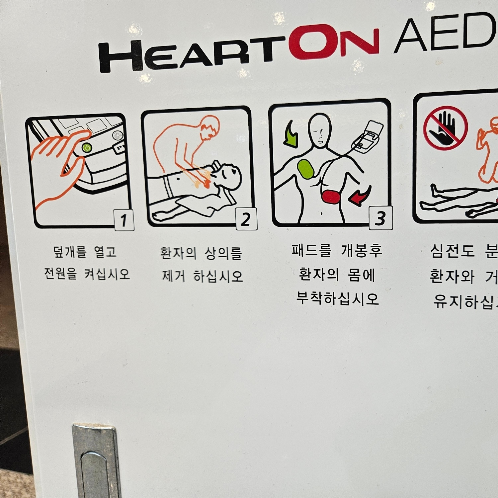
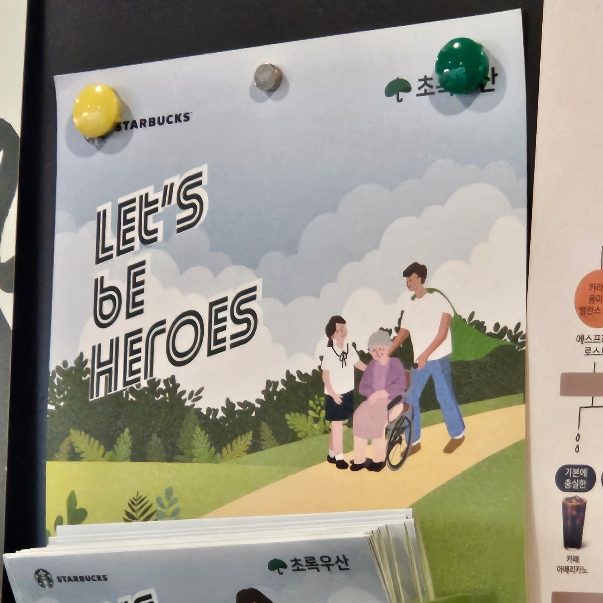
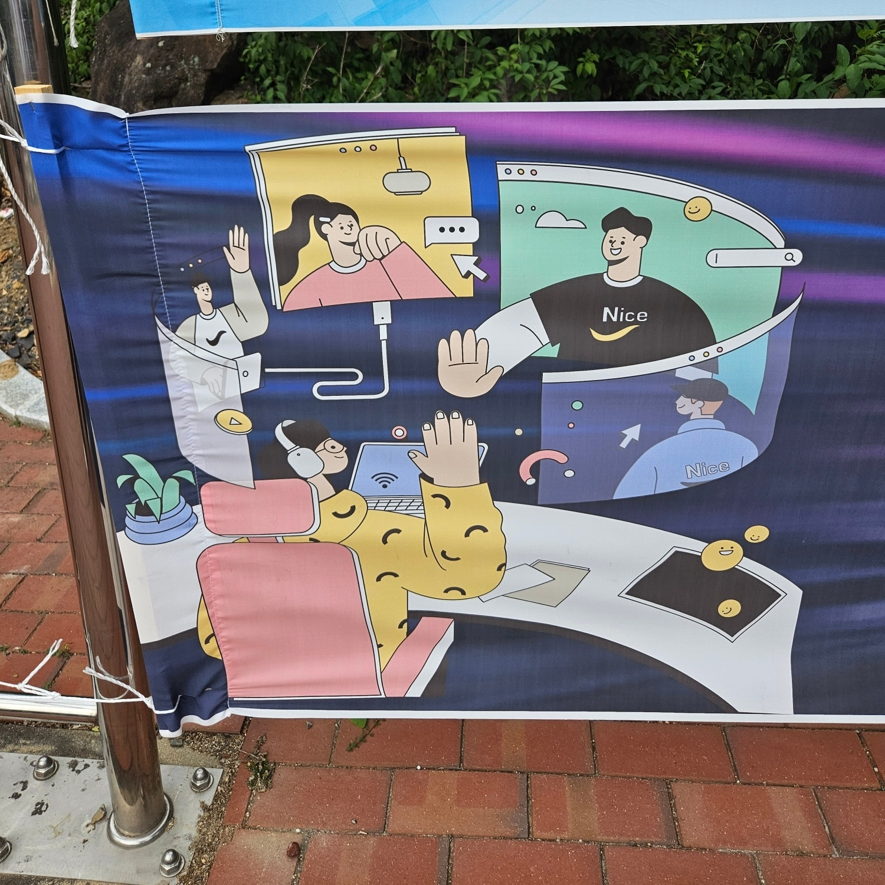
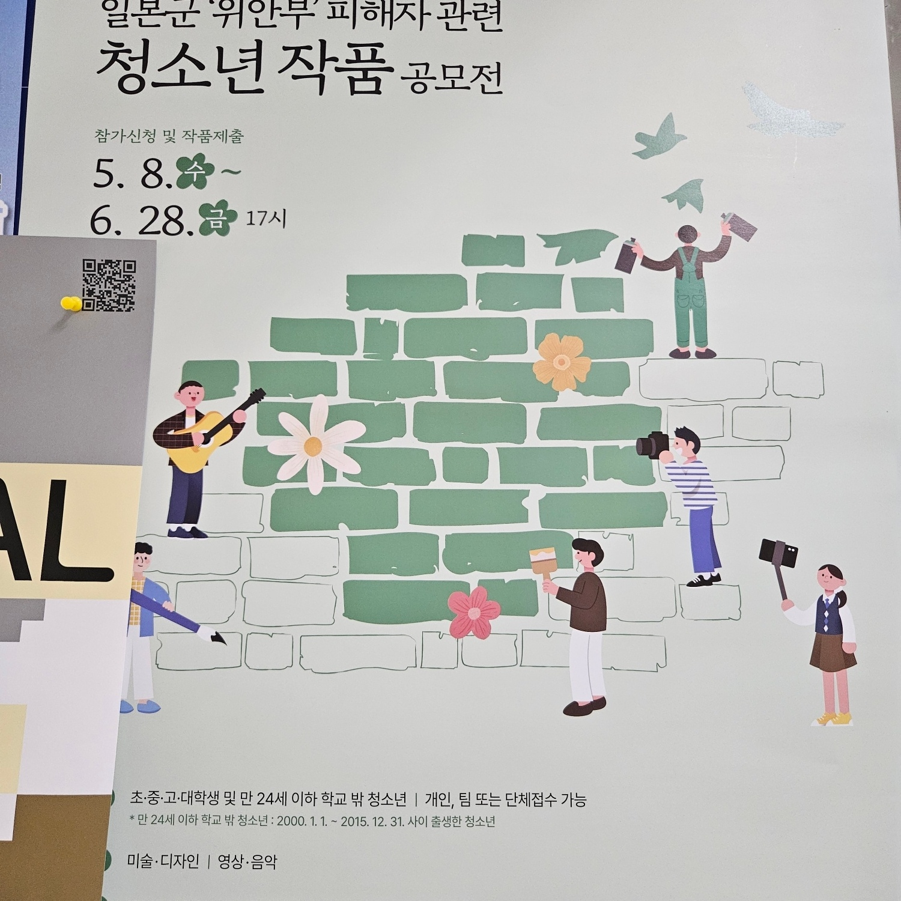
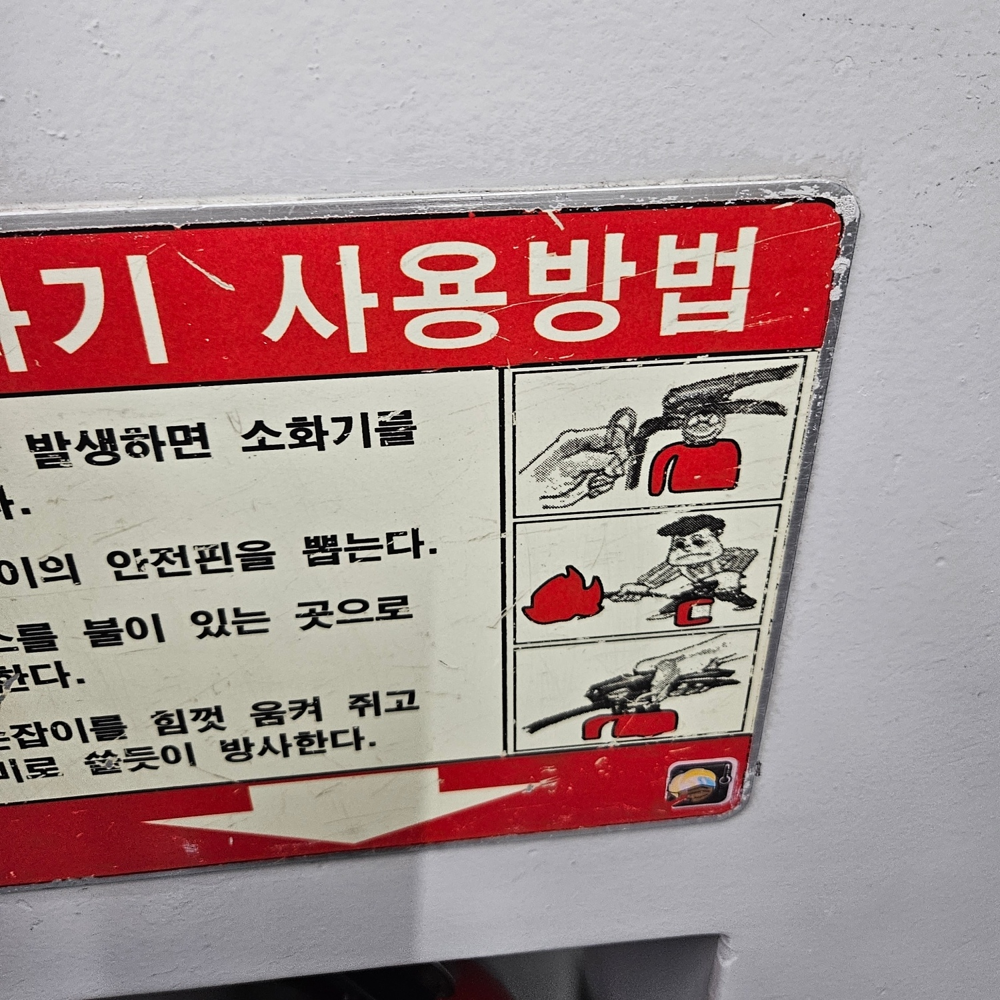
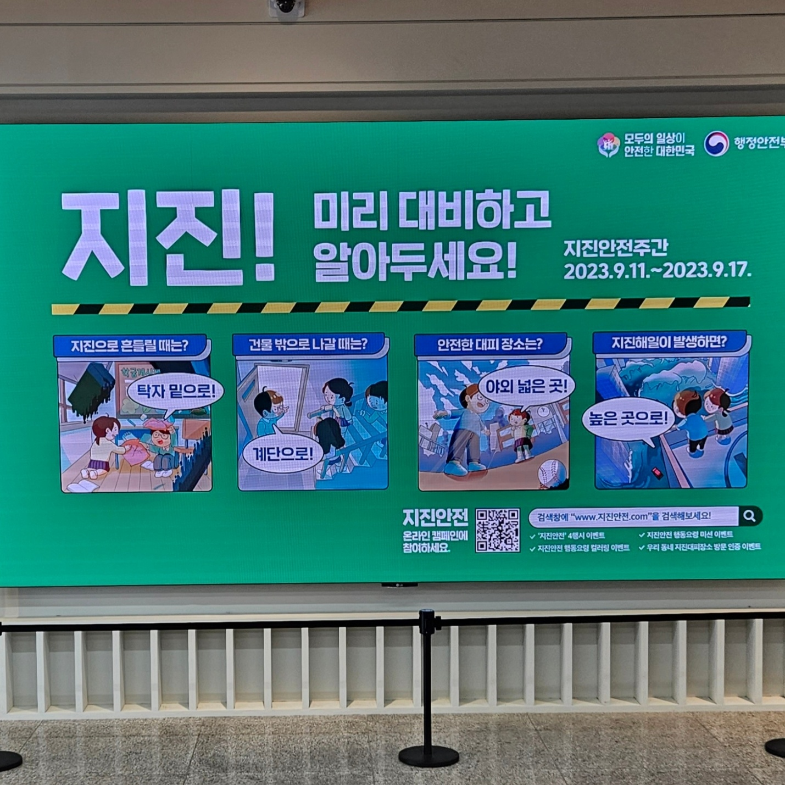

성별
우리는 살아가면서 성별에 대한 고정관념을 가지고 있다. 이러한 고정관념들을 광고홍보물이나 예방 방법 등의 그림들에서 자주 본다. 예를 들면, 구조 단계를 그린 그림에는 주로 남성을 많이 그린다. 반대로 여성들은 보호와 약함의 대상으로 그리거나 꾸밈, 화려함을 보여야 하는 광고에 나타난다. 과거부터 인식되어 왔던 색상, 인식 등 성별에 관한 문제들은 그냥 지나치는 순간이지만 점차 나아져가야 한다고 생각한다. 당장은 아니지만 열린 마음으로 주변을 보고 고정관념을 풀어나가는 시선들이 많아지면 좋겠다.
      